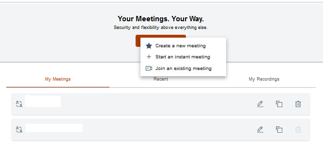

Signing in to Sametime
You can join a Sametime meeting as an authenticated user or guest user. This topic describes the steps on how to sign in to your Sametime account in a web browser.
Before you begin
https://meetings.customname.com/About this task
As a pre-requisite, guests are required to Join as a guest and then enter their display name. Unlike authenticated users, guests have limited access to the meeting features.
Sign in to your account to create, start, or join a meeting. Your account credentials are the same whether you are using the Sametime embedded client or the standalone client. If your organization uses Single Sign-On (SSO), authenticate using the same credentials as other internal services.
To sign in to your account, follow these steps:
Procedure
-
In a web browser, go to the meeting URL. For access assistance, contact the
meeting moderator.
Note: Microsoft Internet Explorer is not supported. For more information, refer to System Requirements.
- On the login page, select Login.
-
Enter your username and password, and then select Login.
After you have signed in to your account, the Meetings homepage is displayed. From the homepage, you can start, edit, and delete a defined meeting room. You can also access your personal room, start an instant meeting, or create a moderated meeting.
